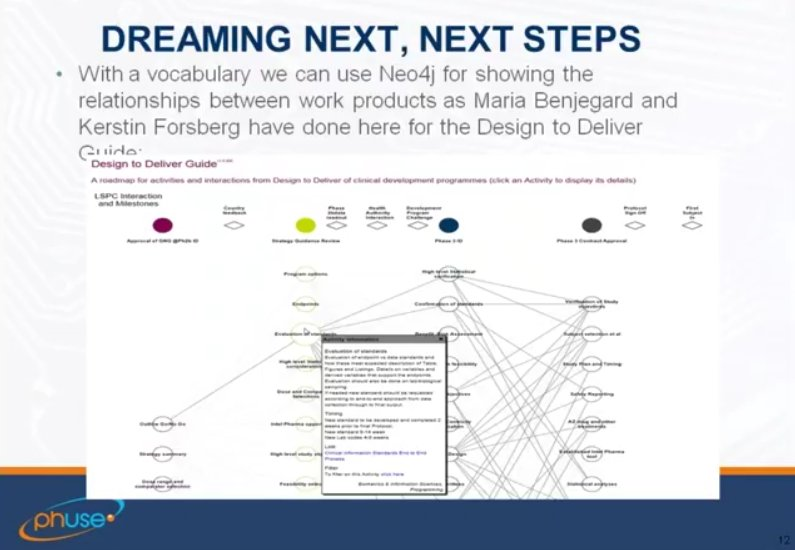

December 2016
My (one of) New Year resolution:Blog and tweet about great people to follow medium.com/@kerfors/favor…
The MIT Professional Education online course on the Internet of Things I am starting in mid Jan with a friend mitprofessionalx.mit.edu/courses/course…
"3. Sign up with a friend." I look forward to take MIT class: Internet of Things: Roadmap to a Connected World, together with an old friend twitter.com/edxonline/stat…
Re-visiting my blog post from 2013 "De-identification and Informed Consent in Clinical Trials" kerfors.blogspot.dk/2013/11/de-ide…
Task for next year: Read @transcelerate Informed Consent transceleratebiopharmainc.com/wp-content/upl… in relation to @WiBanks @Sagebio sagebase.org/governance/par…
Informed Consent and Data Sharing... @wilbanks youtu.be/1bREIyKvtEo [41:15 to 46:15] "put the people in charge of sharing decisions"
"industry has launched internal data sciences functions to analyze data for clinical operations" twitter.com/clin_trials/st…
As an info arcitect I try to help with details such as Identifiers and getting trials on Wikipedia/Wikidata kerfors.blogspot.se/2016/12/wikipe… twitter.com/trished/status…
PhD Course at @hogskolaniboras with #SemanticWeb on the program: Dynamics of Knowledge Organization hb.se/Global/HB%20-%…
Anmäld till #cadec2017 25 jan i Göteborg callistaenterprise.se/event/cadec/20… Spännande program: #microservices #serverless #typescript etc
Off to Skövde with colleagues from @AstraZenecaSE @RecordedFuture @HogskolanSkovde @hogskolaniboras to kick off:: his.se/en/Research/in…
Interesting posts eg "Making Sense of Linked Data with Python" | OCLC Developer Network oclc.org/developer/news…
Wikipedia pages (and Wikidata entities) for clinical trials - a reality 2017? See my blog kerfors.blogspot.se/2016/12/wikipe… cc: @wikidata @opentrials
New blog post: Wikipedia pages (and WikiData entities) for Clinical Trials kerfors.blogspot.se/2016/12/wikipe…
#1: Provide metadata. Nice example describing a dataset for humans w3.org/TR/dwbp/dwbp-e… and for machines w3.org/TR/dwbp/dwbp-e… twitter.com/w3c/status/809…
ClinicalTrials.gov Id, a @wikidata property wikidata.org/wiki/Property:… See how it is being used with this #SPARQL tinyurl.com/zcculuc
"Integrating @opentrials information into @wikidata" opentrials.net/2016/10/13/hac… Would that be via a #Wikidata bot? See sulab.org/2015/09/a-simp…
Interesting: WikiProject Clinical Trials en.wikipedia.org/wiki/Wikipedia… … and on @wikidata wikidata.org/wiki/Wikidata:…
Will look more into this. Hope to find the indicator defintions easy to reference and lockup programatically ie global URIs and API twitter.com/clin_trials/st…
Reading up on @OKFN's #frictionless data packages in relation to @w3c's CSV on the Web #csvw twitter.com/okfnlabs/statu…
Bookmarked: "Statistical tests, P values, confidence intervals, and power: a guide to misinterpretations" on CiteU… ift.tt/2hiWn6j
Just heard a colleague talk about this event. Lots of interesting things to learn more about: Lambda, Glue, Serverless Application Model etc twitter.com/awsreinvent/st…
Great article: Three Gurus of Big Data thetranslationalscientist.com/issues/0816/th… H/T @MCRInformatics
Have agreat time. The agenda looks really interesting. Sorry I can't make it this year twitter.com/cmwallberg/sta…
Nice to see the plug for the #LinkedData Hackathon #PhUSECSS 2017 youtu.be/2Kr9SjcUydE?t=… (5.13-6.15) contact @NovasTaylor / @sbahlavooni
Great to see our Design to Deliver Guide (DDG) using #neo4j highlighted in the presentation of #PhUSECSS group phusewiki.org/wiki/index.php…

Intro: Clinical Development Design (CDD) framework, @PHUSETwitta @PHUSETwitta CSS Working Groups, by Mary Banach youtu.be/2Kr9SjcUydE?t=…
Walking in the sun this lovely winter morning listening to an interesting talk. Lots to digest. Thx for the pointer Tim. twitter.com/novastaylor/st…